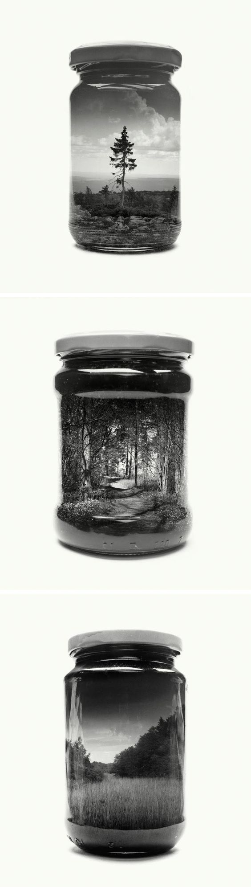

简洁排版之美 Markdown
关鹏
目录
什么是设计？
什么是创意？
什么是排版？
Markdown
什么是设计？
个人介绍
研一在
国科大官微
做美编技术部负责人
研二在
计算所宣传部
工作
排版了几十篇文章，设计了十几张海报，做了几个视频
代表作：
国科大分割线、国科大PPT、国科大表情包
个人作品
个人作品
个人作品
个人作品
个人作品
个人作品
什么是设计？
创意
+
排版
设计中的灵魂是
创意
设计中的基础是
排版
什么是创意？
两个
不相关的事物结合就是创意
一个太少
三个太多
什么是创意？字符+手举物品
什么是创意？人体+悬浮
什么是创意？人体+风景
什么是创意？瓶子+风景

什么是创意？乒乓球+发射爱心
什么是创意？雨伞+地图
什么是创意？人形+野生动物
什么是创意？团圆+狐狸
什么是创意？文字+交通
什么是排版？
整齐有序，重点突出，视线引导正确就是排版
什么是排版？简历
什么是排版？APP
什么是排版？网页
什么是排版？画报
什么是排版？论文
什么是排版？微信公众号
什么是排版？作为PPT的我
Markdown
大多数人不需要会设计，
但需要会排版
PPT、简历、论文、开发文档
Markdown是文档排版利器
如何使用Markdown